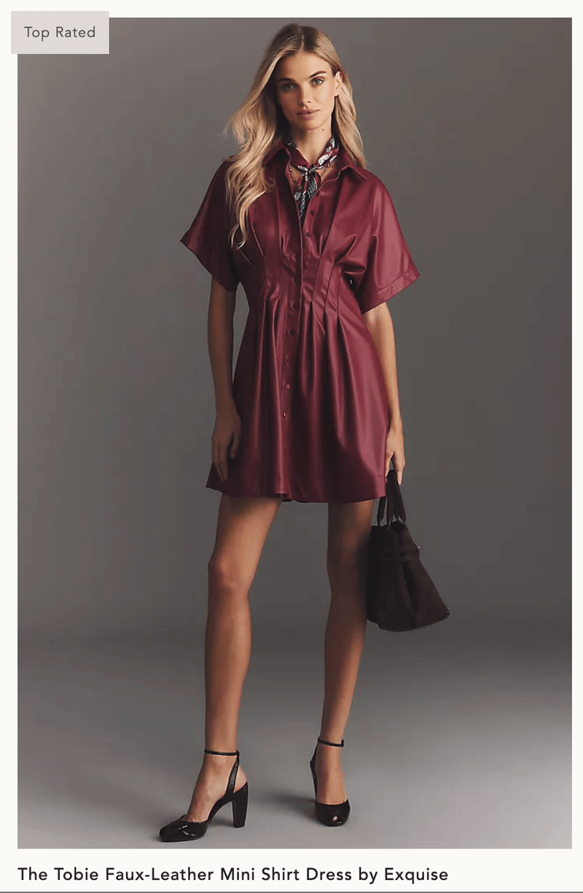

Images
The gif to the left shows the hover microinteraction of the product image. The image in the center shows the default product image state. The image to the right shows the active hover state.


Clicking the product image would navigate the user to the product detail page.